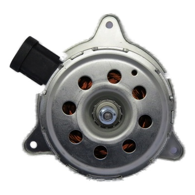
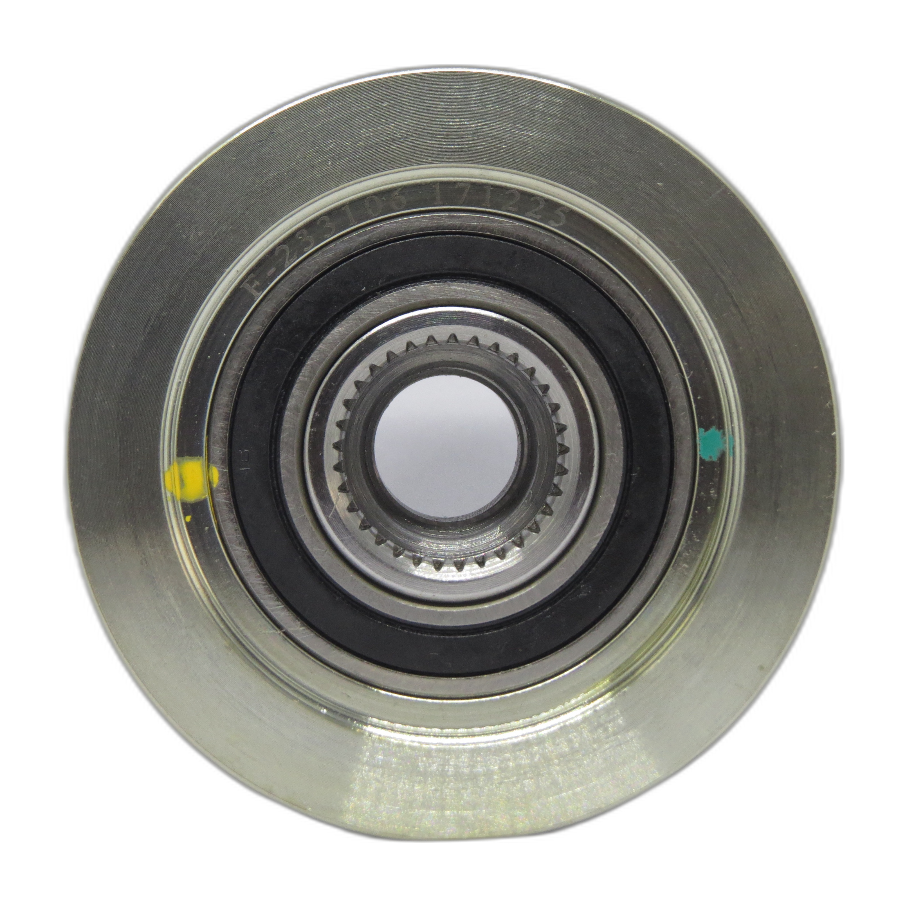
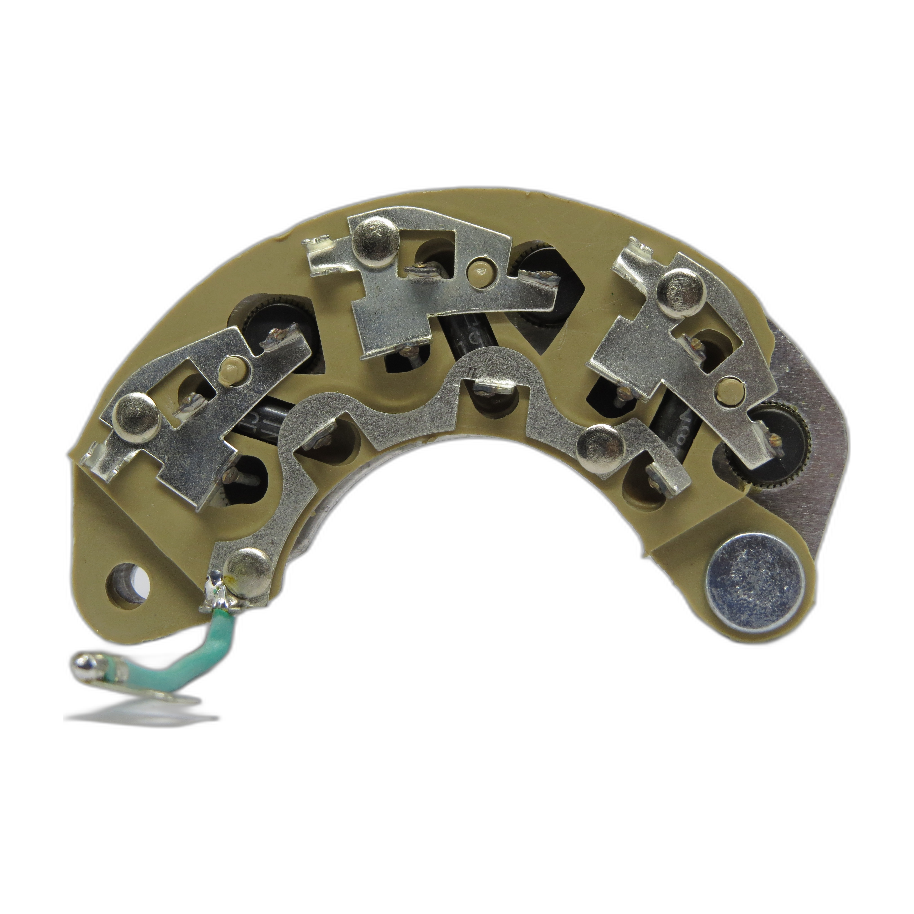

Quality without compromise
OE-grade materials and processes—because a failed electrical part stops the whole vehicle.
About GS-ASCOT
We are a dedicated auto electrical parts brand—manufacturing and supplying OE-quality components for passenger vehicles, commercial fleets, and earthmoving machinery across India.
Deliver reliable electrical spares that workshops and distributors can fit with confidence—every time.
Be the go-to electrical parts partner for the Indian aftermarket, known for quality, range, and service.
Transparent specifications, consistent manufacturing standards, and a catalog built for fast, accurate lookup.
Our story
GS-ASCOT grew from a focused commitment to auto electrical components—where fitment accuracy and durability matter as much as price. Today we cover the full electrical lifecycle of a vehicle: starting, charging, wiping, cooling, lighting, and signalling.
From self-starter assemblies and alternator internals to wiper motors, fan motors, regulators, rectifiers, and accessory switches, each product line is developed with application data and field feedback from distributors and mechanics nationwide.
Our online catalog brings that range to your screen—searchable by model, part number, and vehicle application—so your counter team spends less time hunting and more time selling.




What we believe
OE-grade materials and processes—because a failed electrical part stops the whole vehicle.
Clear model numbers, applications, and imagery so buyers know exactly what they receive.
18 structured categories and 2,300+ parts—covering what Indian workshops actually need.
We support distributors and dealers with dependable supply and a brand customers recognise.
What we make
A single source for major auto electrical lines—each category maintained with dedicated SKUs and sub-ranges.
Assemblies, armatures, bendix, solenoids, field coils, brushes, forks, housings
Assemblies, rotors, stators, rectifiers, regulators, pulleys, bearings, slip rings
Motors with linkage, blades, spray motors, linkage components
Cooling fan motors and related carbons
Halogen bulbs, headlight LED, universal work LED
Horns, reverse horns, ignition and accessory switches
Earthmover starters, alternators, armatures, field coils, switches
Fuses, relays, wiring, chargers, glow plugs, miscellaneous electrical
Every GS-ASCOT line is positioned as OE premium quality—genuine service spares designed for fitment, performance, and repeat business. We invest in product photography and catalog accuracy so your team sells with clarity.
Our journey
Established focus on core electrical assemblies—starters and charging system components for the aftermarket.
Added wiper, lighting, horn, switch, and accessory lines to become a one-stop electrical supplier.
Launched searchable online catalog with categories, specs, and product imagery for faster trade lookup.
2,300+ parts across 18 categories—serving workshops, distributors, and fleet operators across India.
Work with us
Browse the full catalog, filter by category, or contact us through Facebook and Instagram for business enquiries.